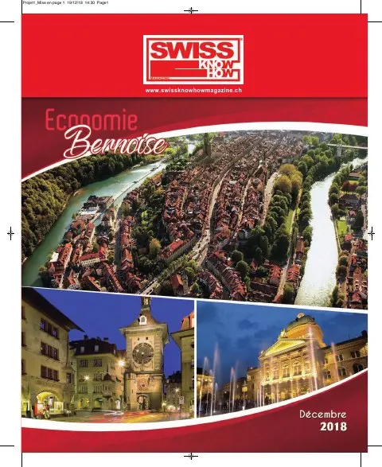

En bref
Fondée en 1961 au service de la communauté expatriée, l'International School of Berne s'est installée dans un nouveau campus et accueille environ 330 élèves de 3 à 18 ans de plus de 50 nationalités. Sa nouvelle directrice décrit les trois programmes du Baccalauréat international (primaire, intermédiaire et diplôme) et le diplôme ISBerne reconnu comme diplôme américain, une pédagogie fondée sur l'enquête, l'allemand et le français comme langues additionnelles, les accréditations CIS et NEASC et l'implication des parents. Interview en anglais.
« We prepare our students for life beyond school. »— Denise Coates
L'interview intégrale
The International School of Berne has been an integral part of the expatriate community of Bern since 1961. Supported primarily by families from embassies and international corporations, over the years the school has grown alongside the international business sector of the canton. The last three years have brought big changes to the school including the construction of and move to a new purpose-built campus as well as the appointment of a new Director earlier this year. Ms Denise Coates joined ISBerne in August, bringing with her a strong background in the International Baccalaureate (IB), the educational programme offered at ISBerne. SWISS Know-how had the opportunity to ask Ms Coates about ISBerne and how it is unique among Swiss and International schools. Let us introduce her now.
Ms Coates, the International School of Berne has been providing quality education for expatriate children in Switzerland for almost 60 years. What levels of education do you offer?
At ISBerne we offer international education for children from 3 to 18 years old. We are proud to offer high-quality education through three of the International Baccalaureate (IB) programmes: the Primary Years Programme, the Middle Years Programme and the Diploma Programme, as well as the ISBerne Diploma.
Which qualifications can be obtained at ISBerne?
We offer the IB Diploma for students aged 16-18. This is a challenging educational programme which is highly recognised and enables our students to enter excellent universities across the world. We also offer the ISBerne Diploma, which is a recognized US High School Diploma, for students who do not follow the full IB Diploma.
By which organisations is ISBerne accredited?
We are accredited by the Council of International Schools, as well as the New England Association of Schools and Colleges. Maintaining accreditation is a demanding process involving a self-study and an onsite visit to evaluate all aspects of the school. We are also authorized by the IB to offer three IB programmes. We undergo regular evaluation visits by the IB to verify that we offer the programmes in line with IB philosophy and requirements. The work of these organisations holds the school accountable, promotes growth and development and ensures that we offer the best possible education to our students.
What are the school’s goals?
We aim to provide rigorous and holistic education in a caring community which promotes international mindedness and respect. We embrace the diversity amongst our students and staff, promoting intercultural awareness and celebrating our differences, as well as building strong ties with our local community. Our inquiry-based approach to learning values students’ perspectives, builds their self-esteem and encourages creativity. We prepare our students for life beyond school by promoting independent thinking, flexibility and resilience.
ISBerne attaches great importance to an international education. What is the difference between your educational offer and that of Switzerland?
In the International Baccalaureate programmes emphasis is placed on conceptual understanding rather than a content-based curriculum. Students are encouraged to be active participants in their learning by engaging in and leading inquiry. They acquire Approaches to Learning skills such as research, organization, collaboration and thinking skills to enable them to construct meaning through making connections between subjects and establishing links with real-life contexts. This pedagogical approach stimulates the students’ natural curiosity and fosters independence.
Are other languages taught in addition to English?
We offer both German and French as additional languages to our students in each of the IB programmes. We also host courses in a variety of languages offered by the Canton of Berne. In addition, students may study their mother tongue or an additional language as a self-taught language in the Diploma years.
How many children and young people are currently being taught at ISBerne and where do they come from?
We have approximately 330 students who come from over 50 different nationalities.
How are the parents of the children and young people integrated into the school?
At ISBerne we have a very active and welcoming Parent Teacher Committee (PTC). Our parents organize a wide range of activities and reach out specifically to any new parents joining the school. Parents have the opportunity to attend monthly PTC meetings and may both participate in and organize events. The PTC is a dynamic and valuable contributor to the positive atmosphere at ISBerne. We also have the Parent School Association (PSA) which is led by three elected members of the parent body who are also Board members. The PSA liaises closely with the School Director and the parents to offer a parent voice at the school.
The new campus looks impressive, can one easily visit?
Yes! We are happy to schedule visits by appointment and are proud to show off the new facility and talk about learning at ISBerne. In addition to individual families, we highly encourage companies and embassies, who may consider sending children to our school, to come and visit so they may feel confident in referring ISBerne to their employees. We also have a new website which showcases life at ISBerne. Please visit www.isberne.ch.
Texte paru dans Swiss Knowhow – Région bernoise (décembre 2018), p. 12.

Personnes citées
- Denise CoatesDirector

Paru dans
Swiss Knowhow – Région bernoise (décembre 2018)
2018 · page 18-19 · article original en anglais
Lire l'article complet PDF